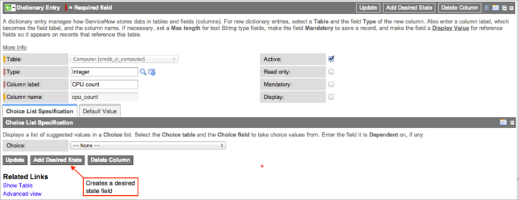
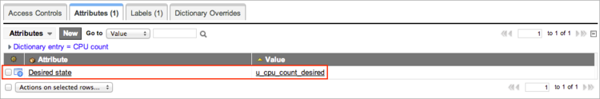
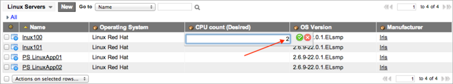
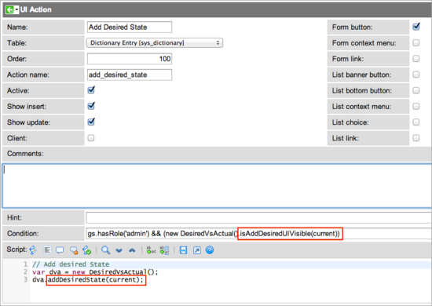
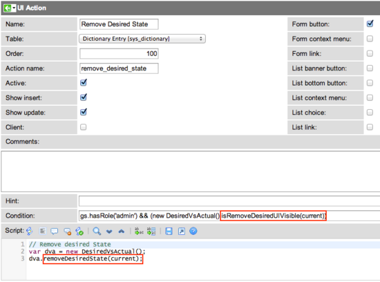

Desired States for Specific Fields
Contents
1 Overview
Starting with Eureka, you can add an attribute to the ServiceNow system dictionary that defines the desired state for a specific field and then audit that value for individual CIs. Use this functionality to create desired state values for specific classes of CIs, such as Linux or Windows servers. Desired state values defined as dictionary attributes appear in a gauge that shows the health of CIs. Desired states for specific fields is available for all compliance types except scripted audits.
2 How the Feature Works
When you create a desired state for a CI field using a dictionary attribute, ServiceNow clones the source field to create a new desired state field. The system adds a desired_state attribute on the source field and an actual_state attribute on the new desired state field. These dictionary attributes define the mapping between the actual and desired values. You can then use a certification template to audit specific CIs that have actual and desired state values configured.
You can configure threshold values for audits of desired state fields and set the standards for CI stability within specified time windows. Audit results show fields that have exceeded their failure threshold and CIs that are unstable because they have switched back and forth too frequently between failure and certification.
3 Setup
Follow these steps to configure a desired state for individual fields and CI classes:
- Create a field for the desired state
- Determine the actual state field
- Set the desired state for the CI
- Create template conditions for desired state attributes
- Create UI actions
4 Creating the Desired State Field
Determine which CIs in your environment need specific field values defined by a desired state. An example might be the Linux server in your environment that runs VMware vCenter. This server performs a lot of processing and needs at least two CPUs to function properly. The other Linux servers are running business services and do not need the extra processor at this time.
- Navigate to Configuration and open any CI record in the target class.
- All the CIs in a class inherit the same attributes configured in the dictionary. This example uses a Linux server (Server > Linux) from the demo data.
- In the server record, right-click the CPU count field label and select Configure Dictionary (Personalize Dictionary in versions prior to Fuji) from the context menu.
- The Dictionary Entry form for the field appears.
- 
- Click Add Desired State.
- Note: This button is hidden if a desired state field already exists.
- The CI record appears, showing a message confirming the addition of the desired state field.
- Right-click the CPU count field label again and select Configure Dictionary (Personalize Dictionary in versions prior to Fuji).
- Select the Attributes related list.
- A new attribute called Desired state has the value u_cpu_count_desired. This is the CPU count (Desired) field that ServiceNow created to hold the desired state value. The system uses this attribute to tie the desired state to the actual state in the CPU count field. For additional details, see How the Feature Works.
- 
{kind=link}
{kind=link}
4.1 How the System Determines the Actual State
When ServiceNow creates a field for the desired state, it also creates a dictionary attribute that defines the actual_state field. This attribute identifies the source field cloned to create the desired state field as the field containing the actual state value. In the example of the CPU count (Desired) field, the system added an attribute to that field's dictionary record defining cpu_count as the field containing the actual state value. During an audit, ServiceNow compares the value in the actual state field to the value in the desired state field to create audit results and to calculate any discrepancies.
{kind=link}
5 Setting the Desired State for a CI
When ServiceNow creates a desired state field, it clones the source field and adds the suffix (Desired) to the label. You can configure the value for this new field in either the CI list view or the CI record. The new field might not appear on the form. If this occurs, configure the form and add it, then move it to a practical location, such as adjacent to the source field. The desired state field does not appear in the list view and must be added.
The following examples use the VMware vCenter host server lnux100, which is included in demo data.
5.1 Assigning Values in the List View
- Navigate to Configuration > Servers > Linux.
- In the list of CIs, double-click in the desired state field for one or more CIs.
- Enter the desired state value for that attribute and click the green icon to save the selection.
- For information about editing multiple entries in the list view, see Editing Lists.
- 
{kind=link}
5.2 Assigning Values in the Form
Navigate to Configuration > Servers > Linux and open the appropriate record. Enter a value in the desired state field, and then click Update.
{kind=link}
6 Creating Template Conditions for Desired State Attributes
You can create certification template conditions that select CI records with desired state values to audit. Navigate to a template for the audit type you want:
- Compliance > Templates
- Compliance > Desired State > Templates
- Compliance > Architecture Compliance > Templates
These conditions compare the actual state field against the desired state field using the following operators:
| Operator | Description |
|---|---|
| is same | Determines if the actual state value for a CI field is the same as the desired state value, in the format [<actual_state>] [is same] [as] [<desired_state>)]. |
| is different | Determines if the actual state value for a CI field is different from the desired state value, in the format [<actual_state>] [is different] [from] [<desired_state>]. |
| is empty | Determines if the desired state field for the CI is empty, in the format [<desired_state>] [is empty]. |
| is not empty | Determines if the desired state field for the CI is not empty, in the format [<desired_state>] [is not empty]. |
| greater than field | Determines if the actual state value for a CI field is greater than the desired state value, in the format [<actual_state>] [greater than field] [<desired_state>]. |
| greater than or is field | Determines if the actual state value for a CI field is greater than or equal to the desired state value, in the format [<actual_state>] [greater than or is field] [<desired_state>]. |
| less than field | Determines if the actual state value for a CI field is less than the desired state value, in the format [<actual_state>] [less than field] [<desired_state>]. |
| less than or is field | Determines if the actual state value for a CI field is less than or equal to the desired state value, in the format [<actual_state>] [less than or is field] [<desired_state>]. |
{kind=link}
6.1 Condition Rules
Certain restrictions apply to using actual_state and desired_state fields in the condition builder.
- Actual state: Each actual state field for the CI can be used only once in the condition builder and only on the left side of the condition.
- Desired state: Each desired state field for the CI can be used multiple times, but only once on the left side of the condition. For example, you can create the following conditions:
- [RAM (MB)] [less than field] [RAM (MB) (Desired)]
- [RAM (MB) (Desired)] [is not empty]
6.1.1 Audit Results and Null Values
Audit results for conditions created with actual_state and desired_state fields vary depending on whether the fields contain a value. This table shows the expected results for all possible variations in which the actual state is on the left side of the condition and the desired state is on the right side, and one or both of these values is null. An example of this would be [CPU count] [greater than or is field] [CPU count (Desired)], where the value in the CPU count (Desired) field is null.
| actual_state | desired_state | Audit result |
|---|---|---|
| Null | Null | Failed |
| Null | Not-Null | Failed |
| Not-Null | Null | Certified |
| |
Note: If the actual state has a value and the desired state is null, the system certifies the audit, because the condition is incomplete. If you want the audit to fail when the desired state is null, add a condition using the [is not empty] operator. |
7 Creating UI Actions
The script include DesiredVsActual manages the dictionary attributes that control the display of the buttons that create and remove desired states. Four methods control these UI actions.
- isAddDesiredUIVisible(current)
- isRemoveDesiredUIVisible(current)
- addDesiredState(current)
- removeDesiredState(current)
7.1 Adding a Desired State UI Action
- Navigate to System Definition > UI Actions.
- Select Add Desired State.
- Look at the value in the Condition field.
- The condition uses the isAddDesiredUIVisible method to determine if the Add Desired State UI action should be created. If this condition evaluates to true, the UI action runs a script using addDesiredState to create the UI action.
- 
{kind=link}
7.2 Removing a Desired State UI Action
- Navigate to System Definition > UI Actions.
- Select Remove Desired State.
- Look at the value in the Condition field.
- The condition uses the isRemoveDesiredUIVisible method to determine if the Remove Desired State UI action should be created. If this condition evaluates to true, the UI action runs a script using removeDesiredState the create the UI action.
- 
{kind=link}
8 Deleting Desired States
- Navigate to Configuration and open a CI record containing a desired state attribute you want to remove.
- In the CI record, right-click a field label containing the suffix (Desired) and select Configure Dictionary (Personalize Dictionary in versions prior to Fuji) from the context menu.
- In the Dictionary Entry form, click Remove Desired State.
- The view returns to the CI record. A message at the top notifies you that the desired state was removed.